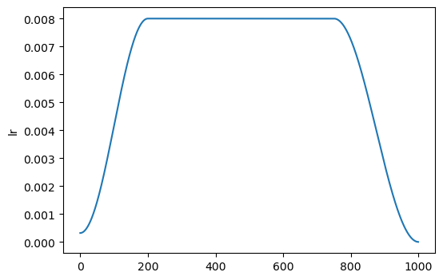
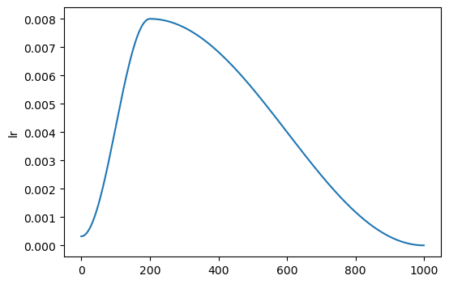
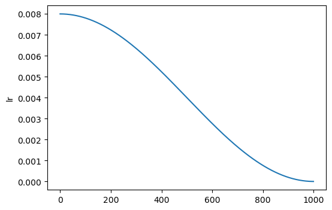

Schedulers
Additional model training schedulers for fastai
Learner.fit_flat_warmup
Learner.fit_flat_warmup (n_epoch:int, lr:Optional[float]=None, div:Union[int,float]=25.0, div_final:Union[int,float]=100000.0, pct_start:float=0.75, warm_pct:float=0.2, warm_epoch:int=5, warm_mode:str='auto', warm_sch ed:Callable[...,fastai.callback.schedule._Anneal er]=<function SchedCos>, wd:Optional[float]=None, cbs:Union[fastai.callba ck.core.Callback,Iterable[fastai.callback.core.C allback],MutableSequence[fastai.callback.core.Ca llback],fastcore.foundation.L,fastcore.basics.fa stuple,NoneType]=None, reset_opt:bool=False)
Fit self.model for n_epoch at flat lr with a warmup and ending with cosine annealing.
| Type | Default | Details | |
|---|---|---|---|
| n_epoch | int | Number of epochs | |
| lr | float | None | None | Maximum learning rate |
| div | Numeric | 25.0 | Initial learning rate: lr/div |
| div_final | Numeric | 100000.0 | Final learning rate: lr/div_final |
| pct_start | float | 0.75 | Start learning rate cosine annealing |
| warm_pct | float | 0.2 | Learning rate warmup in percent |
| warm_epoch | int | 5 | Learning rate warmup in epochs |
| warm_mode | str | auto | Warmup using ‘epoch’, ‘pct’, or min of epoch/pct if ‘auto’ |
| warm_sched | Callable[…, _Annealer] | SchedCos | Learning rate warmup schedule |
| wd | float | None | None | Weight decay, defaults to Optimizer weight decay |
| cbs | Listified[Callback] | None | None | Temporary Callbacks to apply during fit |
| reset_opt | bool | False | Reset Optimizer before fit |
fit_flat_warmup is identical to fastai’s fit_flat_cos, except with an added learning rate warmup phase.
By default, fit_flat_warmup will apply learning rate warmup for a minimum of warm_pct percent of training steps or warm_epoch number of training epochs. Set warm_mode='pct' to warmup the learning rate for warm_pct percent of training steps or set warm_mode='epoch' to warmup the learning rate for warm_epoch number of epochs.
warm_sched can be one of SchedCos (the default), SchedLin,SchedExp, SchedPoly, or a custom fastai annealer based schedule. SchedPoly must be passed as partial function: partial(SchedPoly, power=0.5).
Learner.fit_cos_anneal
Learner.fit_cos_anneal (n_epoch:int, lr:Optional[float]=None, div:Union[int,float]=25.0, div_final:Union[int,float]=100000.0, warm_pct:float=0.2, warm_epoch:int=5, warm_mode:str='auto', warm_sched:Callable[...,fas tai.callback.schedule._Annealer]=<function SchedCos>, wd:Optional[float]=None, cbs:Union[fas tai.callback.core.Callback,Iterable[fastai.callba ck.core.Callback],MutableSequence[fastai.callback .core.Callback],fastcore.foundation.L,fastcore.ba sics.fastuple,NoneType]=None, reset_opt:bool=False)
Fit self.model for n_epoch using a with cosine annealing schedule with a max lr and optional warmup.
| Type | Default | Details | |
|---|---|---|---|
| n_epoch | int | Number of epochs | |
| lr | float | None | None | Maximum learning rate |
| div | Numeric | 25.0 | Initial learning rate: lr/div |
| div_final | Numeric | 100000.0 | Final learning rate: lr/div_final |
| warm_pct | float | 0.2 | Learning rate warmup in percent |
| warm_epoch | int | 5 | Learning rate warmup in epochs |
| warm_mode | str | auto | Warmup using ‘epoch’, ‘pct’, or min of epoch/pct ‘auto’ |
| warm_sched | Callable[…, _Annealer] | SchedCos | Learning rate warmup schedule |
| wd | float | None | None | Weight decay, defaults to Optimizer weight decay |
| cbs | Listified[Callback] | None | None | Temporary Callbacks to apply during fit |
| reset_opt | bool | False | Reset Optimizer before fit |
To disable learning rate warmup, set warm_pct=0.
By default, fit_cos_anneal will apply learning rate warmup for a minimum of warm_pct percent of training steps or warm_epoch number of training epochs. Set warm_mode='pct' to warmup the learning rate for warm_pct percent of training steps or set warm_mode='epoch' to warmup the learning rate for warm_epoch number of epochs.
warm_sched can be one of SchedCos (the default), SchedLin,SchedExp, SchedPoly, or a custom fastai annealer based schedule. SchedPoly must be passed as partial function: partial(SchedPoly, power=0.5).
With optional learning rate warmup:

And without learning ratewarmup:

Learner.fit_flat_varied
Learner.fit_flat_varied (n_epoch:int, start_lr:Optional[float]=None, div_final:Union[int,float]=100000.0, pct_start:float=0.75, wd:Optional[float]=None, n ext_lr:Union[float,Iterable[float],MutableSequen ce[float],fastcore.foundation.L,fastcore.basics. fastuple,slice,NoneType]=None, change_by:Union[i nt,Iterable[int],MutableSequence[int],fastcore.f oundation.L,fastcore.basics.fastuple,float,Itera ble[float],MutableSequence[float],NoneType]=None , change_time:Union[int,Iterable[int],MutableSeq uence[int],fastcore.foundation.L,fastcore.basics .fastuple,float,Iterable[float],MutableSequence[ float]]=1, change_sched:Union[Callable[...,fasta i.callback.schedule._Annealer],Iterable[Callable [...,fastai.callback.schedule._Annealer]],Mutabl eSequence[Callable[...,fastai.callback.schedule. _Annealer]],fastcore.foundation.L,fastcore.basic s.fastuple,NoneType]=None, cbs:Union[fastai.call back.core.Callback,Iterable[fastai.callback.core .Callback],MutableSequence[fastai.callback.core. Callback],fastcore.foundation.L,fastcore.basics. fastuple,NoneType]=None, reset_opt:bool=False)
Fit self.model for n_epoch at flat start_lr, then change to flat next_lr at change_by, optionally with cosine annealing or custom change_sched over change_time. Final cosine annealing at pct_start.
| Type | Default | Details | |
|---|---|---|---|
| n_epoch | int | Number of epochs | |
| start_lr | float | None | None | Initial learning rate |
| div_final | Numeric | 100000.0 | Final learning rate: lr/div_final |
| pct_start | float | 0.75 | Start learning rate cosine annealing |
| wd | float | None | None | Weight decay, defaults to Optimizer weight decay |
| next_lr | Listified[float] | slice | None | None | Learning rates to switch to at change_by. Must be same length as change_by |
| change_by | Listified[int] | Listified[float] | None | None | Epochs or percent of steps to switch to next_lr by. Must be same length as next_lr |
| change_time | Listified[int] | Listified[float] | 1 | If greater than 0 (percent of steps or epochs), how long to change to next_lr. Must be same length as next_lr |
| change_sched | Listified[Callable[…, _Annealer]] | None | None | Schedule(s) for change. Defaults to SchedCos. Must be same length as next_lr |
| cbs | Listified[Callback] | None | None | Temporary Callbacks to apply during fit |
| reset_opt | bool | False | Reset Optimizer before fit |
change_sched can be one of SchedLin, SchedCos (the default), SchedExp, SchedPoly, or a custom fastai annealer based schedule. SchedPoly must be passed as partial function: partial(SchedPoly, power=0.5).
Example Fit Flat Varied Schedules
Discriminative Linear Warmup:
learn.fit_flat_varied(4, slice(3e-5, 3e-3), next_lr=3e-3, change_by=1, change_time=1, change_sched=SchedLin)
Multiple Cosine Annealing:
learn.fit_flat_varied((15, 8e-3, next_lr=[6e-3, 4e-3], change_by=[4, 8], change_time=2)
Immediate Change:
learn.fit_flat_varied((10, 8e-3, next_lr=[6e-3, 4e-3], change_by=[0.25, 0.5], change_time=0)